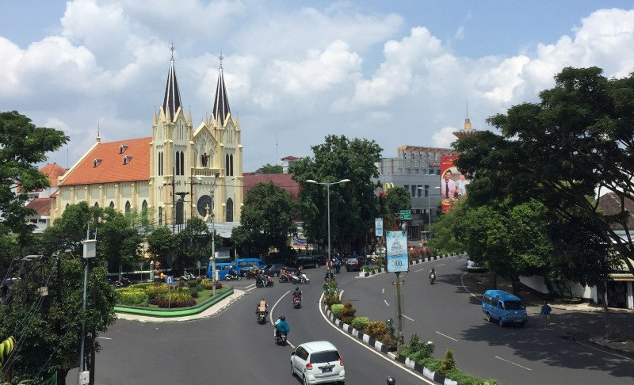
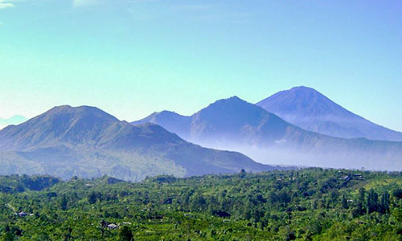
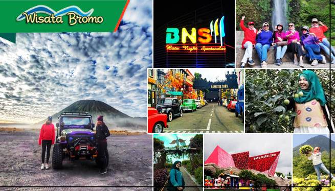

Malang
Kota yang dijuluki sebagai kota apel , yang terletak di Provinsi Jawa Timur.
Sejarah

Malang merupakan sebuah kerajaan yang berpusat di wilayah Dinoyo, dengan Raja Gajayana. Tahun 1882 rumah-rumah di bagian barat kota didirikan dan kota didirikan alun-alun dibangun. 2 Maret 1947 Pemerintah Republik Indonesia kembali memasuki Kota Malang.
Julukan Malang Kota Bunga erat kaitannya dengan banyaknya taman dan ragam pepohonan yang menghiasi Kota Malang. Hal ini tidak lepas dari konsep rancangan kota taman yang diwariskan Thomas Karsten.
Geografis

Keadaan Geografis
Letaknya yang berada ditengah-tengah wilayah Kabupaten Malang secara astronomis terletak 112,06° – 112,07° Bujur Timur dan 7,06° – 8,02° Lintang Selatan, dengan batas wilayah sebagai berikut : Sebelah Utara : Kecamatan Singosari dan Kec. Karangploso Kabupaten Malang.
Wisata

Ada beberapa destinasi wisata yang dapat dikunjungi,beberapa diantaranya adalah:
- Gunung Bromo atau dalam bahasa Tengger dieja "Brama", juga disebut Kaldera Tengger, adalah sebuah gunung berapi aktif di Jawa Timur, Indonesia. Gunung ini memiliki ketinggian 2.329 meter di atas permukaan laut dan berada dalam empat wilayah kabupaten, yakni Kabupaten Probolinggo, Kabupaten Pasuruan, Kabupaten Lumajang, dan Kabupaten Malang. Gunung Bromo terkenal sebagai objek wisata utama di Jawa Timur. Sebagai sebuah objek wisata, Bromo menjadi menarik karena statusnya sebagai gunung berapi yang masih aktif. Gunung Bromo termasuk dalam kawasan Taman Nasional Bromo Tengger Semeru.Nama Bromo berasal dari nama dewa utama dalam agama Hindu, Brahma.
- Alun-Alun Kota Malang adalah salah satu taman kota yang berada di Kota Malang. Wisata ini merupakan tempat wisata yang ramai akan wisatawan pada hari hari biasa maupun pada hari libur. Selain itu, tempat ini memberikan suasana yang dapat mengatasi kejenuhan akan aktivitas kita sehari-hari. Sangat disayangkan jika kamu berada di Kota Malang, namun tidak mengunjungi taman kota yang memiliki pesona keindahan yang tiada duanya.
- Museum Angkut merupakan taman bermain tematik kendaraan yang termasuk bagian dari Jatim Park Group. Museum ini pertama kali dibuka untuk umum di tahun 2014 dan langsung menarik perhatian.
Demikian sekilas informasi Kota Malang, Jawa Timur